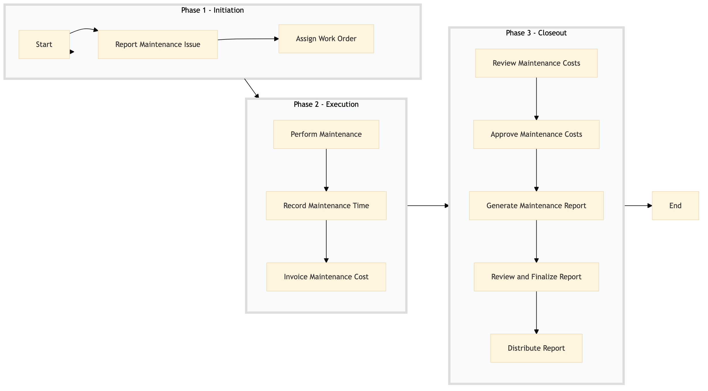

| Role | Steps |
|---|---|
| Executive Housekeeper | 1.1 3.5 |
| Facilities Manager | 1.2 2.1 3.1 3.3 |
| Maintenance Technician | 2.2 2.3 |
| Accountant | |
| Finance Manager | 3.2 |
| General Manager | 3.4 |
| Step | Name | Role | System | Input | Output | KPI | Dec? | Exc? | Pain Point / Risk |
|---|---|---|---|---|---|---|---|---|---|
| 1.1 | Report Maintenance Issue | Executive Housekeeper | Oracle OPERA Cloud | Maintenance request form | Work order created in Oracle OPERA Cloud | Less than 5 minutes per report | N | Y | Delayed reporting due to unclear issue description |
| 1.2 | Assign Work Order | Facilities Manager | Oracle OPERA Cloud | Work order details | Assigned work order with technician | Less than 30 minutes per assignment | N | Y | Inefficient allocation of technicians |
| 2.1 | Perform Maintenance | Maintenance Technician | Oracle OPERA Cloud | Assigned work order | Completed maintenance task | Less than 60 minutes per task | N | Y | Inadequate inventory of spare parts |
| 2.2 | Record Maintenance Time | Maintenance Technician | Oracle OPERA Cloud | Completed task details | Updated work order with time spent | Less than 5 minutes per record | N | Y | Manual data entry errors |
| 2.3 | Invoice Maintenance Cost | Accountant | SAP S/4HANA | Work order with time and materials | Maintenance invoice | Less than 10 minutes per invoice | N | Y | Incorrect cost calculation |
| 3.1 | Review Maintenance Costs | Finance Manager | SAP S/4HANA | Maintenance invoices | Cost review report | Less than 30 minutes per review | Y | N | Overlooking discrepancies in costs |
| 3.2 | Approve Maintenance Costs | General Manager | SAP S/4HANA | Cost review report | Approved maintenance budget | Less than 15 minutes per approval | Y | N | Budget overruns due to unapproved expenses |
| 3.3 | Generate Maintenance Report | Facilities Manager | Microsoft Power BI | Approved budget and work order data | Maintenance cost report | Less than 20 minutes per report | N | Y | Inaccurate reporting due to outdated data |
| 3.4 | Review and Finalize Report | General Manager | Microsoft Power BI | Maintenance cost report | Finalized maintenance cost report | Less than 10 minutes per review | Y | N | Missing key information in reports |
| 3.5 | Distribute Report | Executive Housekeeper | Microsoft Power BI | Finalized maintenance cost report | Report distributed to relevant stakeholders | Less than 5 minutes per distribution | N | Y | Delayed communication of critical information |
This process tracks and reports maintenance costs at a Marriott full-service hotel to ensure financial transparency and operational efficiency.